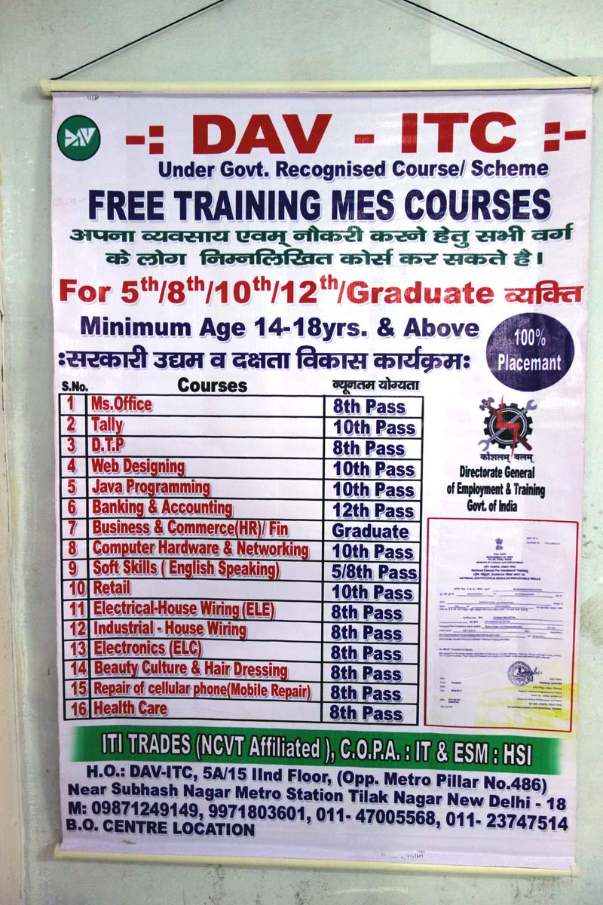

-

- Rising fortunes, falling FLFP
- Skill India to Make in India
- Pilot survey
- Insights from Pakistan
- Interlinked efforts to increase women’s "worth"
-

-
Based on a project which was partly funded by UK aid. All photographs copyright Evidence for Policy Design.
If you have questions or comments, please contact us.
BCURE Case: Skills training programmes in South Asia
by Evidence for Policy Design
May 2016

Skills training programmes are a promising way to bring young women into the workforce, but they fail when their design is inconsistent with ingrained social norms. Two recent collaborations between researchers and government ministries illuminate the obstacles that keep South Asian women out of skills training programmes and suggest the kind of policy designs that can alleviate these obstacles. Looking at the two projects side-by-side shows how the incentives policymakers face can sometimes narrow their vision, and how data analytics and cross-country comparisons can open up perspectives on policy solutions.
Rising fortunes, falling FLFP
Rapid economic growth in South Asia reduced the region’s extreme poverty rate from 52 per cent in 1990 to 17 per cent in 2015. With increased prosperity have come improvements in women’s lives. According to the final report from the UN Millennium Development Goals, maternal mortality across the region dropped 64 per cent during that quarter-century, and the gender gap in primary and secondary education was erased. World Bank data has shown that the fertility rate went from 4.3 births per woman in 1990 to 2.6 in 2015.
While those indicators for women’s empowerment showed progress, another indicator went in the opposite direction. Female labour force participation (FLFP) decreased in South Asia between 1993 and 2013 according to the International Labour Organization (ILO), a drop driven mostly by declines in India. There, FLFP fell by nine percentage points from 36 per cent in 1993 to 27 per cent in 2013, while in neighbouring Bangladesh, FLFP hovered at around 60 per cent.
This matters for women’s lives. Women reap a number of benefits when they make their own money and gain the voice within the home that comes with earning a wage. It also matters for the economy. A 2015 McKinsey report calculated that if by 2025 women participate equally in the world economy, it will add up to 26 per cent to the global GDP – that’s US$28 trillion. When broken down by country and region, India stands to gain the most in the world, with a 60 per cent possible GDP increase, followed by the rest of South Asia with 48 per cent.
Furthermore, these stubbornly low FLFP rates defy what economists would predict based on comparisons between countries. As a lower-middle-income country develops, FLFP usually rises. The fact that the rates in India and Pakistan are far below other countries of similar levels of development suggests that it might take policy interventions to clear the path for women to enter the workplace. While the links between training programmes and FLFP remain unclear, research has shown that individuals who complete vocational training are much more likely to participate in the labour force. Imbuing a large number of young, rural women with marketable skills seems a possible way to raise FLFP.
These ideas have not been lost on governments. Leaders in both India and Pakistan have committed to raise the number of their citizens receiving skills training – not only to reduce poverty but also to make South Asia a manufacturing hub. Both countries are keen to cash in on their demographic dividends – the increased prosperity offered by having a growing working-age population and a shrinking non-working-age population. But while these skills-training initiatives have seen some success, they have largely failed to meet their goals of training and securing employment for that largest untapped demographic, women.

Evidence for Policy Design (EPoD), a research collective with teams at Harvard and in Delhi, is in the unique position of having collaborated with policymakers on projects in both India and Pakistan on analysing skills-training programmes and identifying methods to draw in women. In India, the project is at the “problem-identification” stage in a process EPoD calls Smart Policy Design. A 2015 pilot project – part of the Building Capacity to Use Research Evidence (BCURE) programme funded by the UK government – allowed EPoD to work with policymakers at the Ministry of Rural Development on data analysis to inform the reorganization and re-launch of its skills training programme for rural youth. In Pakistan, the project is at the “test and refine” stage. A separate UK government-funded project not only allowed researchers to perform data analyses to point to possible solutions, but also test these possible solutions through large-scale randomized controlled trials.
Much can be gained by looking at these two efforts side by side. While obvious differences distinguish India (where FLFP is falling) from Pakistan (where FLFP is lower than in India, but rising), women from both countries report many of the same obstacles that keep them from both enrolling in skills training and joining the workforce. At the very least, findings from one country could inform a research path in the other. At best, they could suggest a solution.
Skill India to Make in India
In 2014 India’s new presidential administration began an initiative called "Make in India" to improve the economy through job creation, and an accompanying "Skill India" campaign to create the labour force to fill those jobs. The government created a new ministry to oversee a suite of projects conducted by 23 other ministries.
The Ministry of Rural Development (MoRD) had been providing skills training to rural youth as a type of welfare programme aiming to raise employment outside of agriculture, helping families diversify their income portfolio to sustain financial shocks, and relieving poverty. From 2007 to 2012 MoRD’s programme for skills training had struggled with low take-up among its target population, especially young women. MoRD aimed to give the programme a major overhaul and a four-fold expansion under a new banner, Deen Dayal Upadhyaya Grameen Kaushalya Yojana, (named in honour of a prominent Indian social philosopher), or DDU-GKY.
In 2013, the ministry assigned a seasoned official, A. Santhosh Mathew, to lead the effort. An economist as well as a civil servant, Mathew was known for his interest in new ideas and technological solutions, and for using data and evidence not only to evaluate existing programs, but to design new ones.
MoRD’s skills training programme outsourced the actual mobilization, training and placement services to partner implementing agencies (PIAs) many of which were large organizations operating in multiple states. A PIA typically offered training in two or three choices from a wide range of trades – from IT and electrician training to hospitality and retail.
Under the previous incarnation of MoRD’s programme, the PIAs had a great deal of agency in how they would provide the training. Mathew describes some of the drawbacks:
"For the same amount of money, we were seeing trainees who were trained for one week and others who were trained for three months. For the same amount of money, we had training going on under a tree and we had training going on in a proper lab and classroom or on-the-job training. For the same amount of money, we were getting post-placement incomes of 2000 rupees and post-placement incomes of 15000 rupees. There was no standardization."
Of course, the end goal was not to get people into training programmes but into jobs, and the programme rules did stipulate that PIAs successfully place 75 per cent of trainees. “How did we check that they fulfilled this requirement? That again was not clear,” Mathew explains. “They said, ‘They have jobs,’ and we said, ‘Okay.’” Furthermore, although the status quo system mandated that one third of trainees be women, it lacked a clear strategy to reach and enrol them.
To say the least, this was a data-poor environment. In order to evaluate and redesign the program, Mathew needed information on its performance in its last incarnation, on its target group of potential trainees, and on the firms that might hire them. He had recently collaborated with EPoD on improving the quality and accessibility of data on another MoRD division through the MGNREGA Public Data Portal. Funding from the BCURE programme allowed Mathew to call on EPoD again, this time to conduct data analysis to guide the DDU-GKY redesign.
The former programme’s data on its own performance was aggregated to the level of the state and sector. Harvard PhD candidate Soledad Artiz, who joined the EPoD team in 2014 to work on the pilot project, explains, “They just had the numbers of those trained and the numbers of those placed. No person-level data, nothing that could give you any understanding of success stories.”
To begin to assemble a more detailed picture, Artiz and the EPoD team used data from the 2012 National Sample Survey (NSS), which included questions about training and employment. They examined three key factors of rural youth – their education, labour force participation, and participation in vocational training programs. Skilling rural youth seemed worth the effort – regardless of education level, those who had completed vocational training were much more likely to participate in the labour force. Also, in targeting high school graduates, the status quo system had missed a large pool of potential trainees. (For more on these insights, click the buttons to the right.)
The NSS data confirmed a wide gender gap in employment. Only 25 per cent of rural women aged 18 to 35 were active members of the labour force, compared to 85 per cent of their male counterparts. The data confirmed the common perception that these women did work, but within the home, and showed that they were interested in wage labour. Of rural women 18 to 35 years old, 68 per cent said that they were required to spend most of their time on domestic duties and 45 per cent reported being willing to accept work if it were made available in their household. The corresponding number for older women (aged 36 to 50) was 28 per cent. This suggested a potential cultural shift, with the younger generation showing more interest in potential earning opportunities than their mothers.
Pilot survey
This data diagnostic gave the EPoD/MoRD team a foundation of knowledge about women and work in India. The insights were broad – since the surveys consulted were not designed specifically for the task – but based on a huge number of respondents. Next, the team obtained far more detailed information tailored to the task, but from a small sample in one rural area. In autumn 2015, funding from J-PAL allowed EPoD researchers and colleagues from a Chennai-based research institution, IFMR-LEAD, to conduct a survey of 479 people in in Madhya Pradesh, a relatively conservative area of central India. The team focused on young women, but also interviewed their parents and some young men.
The survey results confirmed some assumptions about gender norms and showed a wide gap between how women and men viewed FLFP: 91 per cent of female respondents stated women should go out of the house to work, while only 33 per cent of their male counterparts felt similarly. Again the team saw that young women had a more positive view of employment but, troublingly, young men had a dimmer view of women working than their fathers did.
Surveyors asked the question, “If you had a daughter, would you like your daughter to go out for work or would you want her to stay at home and look after her family?” In response, 96 per cent of female youths said they wanted their daughters to work, versus 64 per cent of males.
There was also a great gender divide when it came to willingness to migrate for work. While 100 per cent of male and 78 per cent of female youth said they were willing to relocate to the nearby state capital of Bhopal for a job following training, only 59 per cent of male and 23 per cent of female youth said they were willing to relocate to Delhi. The numbers were similar when respondents were asked whether they would migrate to Bhopal and Delhi for training. Among parents, close to 80 per cent said they would allow their daughter to go to Bhopal for work, but only 31 of mothers and 38 of fathers would let her go to Delhi or Mumbai. Safety seemed to be a chief concern keeping women close to home: 69 per cent of young women said it was unsafe to live away from home even during training and a large majority of male guardians believed that crime was more likely to happen in urban areas than the village, and more likely to happen to women. This is important because there were almost no job opportunities for training or skilled labourers in survey villages, and a young woman’s chances of finding work were far higher in Delhi.
This combination of factors may have placed young, rural women in a kind of catch-22. They wouldn’t achieve increased independence and mobility without income, and they couldn’t increase income without mobility. Meanwhile, their prospective husbands seemed more willing to empower their daughters than their wives – a view that might change when the realities of budgeting for a family set in, but daunting nonetheless.
As part of the BCURE pilot project, the EPoD team also visited PIAs across several states conducting qualitative interviews, observing training sessions, and meeting students and implementers. They saw that there was great variation in quality among these institutions, and even the best ones had a difficult time filling the government’s quotas for women trainees and for 75 per cent job placement post-training.
They also observed how women performed once in the programmes. “If a woman starts a programme, she finishes,” said Artiz, “and that’s not always the case for men.”
So the main constraint keeping women from both training and jobs was neither willingness nor aptitude, but lack of access. How to grant them that? EPoD asked this in the next stage of research, and the results have yet to arrive. However, we can get a hint at what they might reveal because another member of the BCURE Harvard team had come across similar constraints to FLFP in previous research in Pakistan. There, he was able not only to diagnose the problem, but also to test possible solutions.
Insights from Pakistan
In 2012 EPoD co-director Asim Khwaja, with colleagues from Princeton and Pakistan’s Lahore University of Management Sciences (LUMS), began a collaboration with the Punjab Skills Development Fund (PSDF). Conscious of the well-established link between skill acquisition and income potential, PSDF shared DDU-GKY’s mission of skills training, specifically focusing on the four highest-poverty districts in Punjab. With funding from DFID Pakistan, IZA/DFID’s GLM-LIC program, and IDRC’s GrOW program, the research team worked with PSDF to identify reasons for low take-up of skills training programmes, and to design and evaluate interventions that would address them.
Initial findings suggested that skills were in high demand; in 90 per cent of households, respondents expressed interest in enrolling in skills training. This mismatch between low skill levels and high demand for skills prompted the project team to conduct a randomized trial to measure the returns to training. As part of the trial, households were offered both a financial stipend and a voucher for free enrolment in a course. Intriguingly, members of only 5 per cent of these households enrolled in courses, with an even smaller proportion seen among rural women. The project team was thus compelled to cycle back and refocus their efforts towards solving the access problem.
The team conducted a pilot evaluation of a PSDF training scheme for rural women to identify constraints that hinder take-up. They tested the effects of distance through the random placement of training centres in villages. They also tested the effects of information campaigns and community mobilization efforts through focus groups among separate groups of men and women. The presentation in these focus groups emphasized the potential benefits of participating in the training programme, examined constraints that hindered women from participating in courses, and collectively reflected on possible solutions to these constraints.
The results were promising: the team found a take-up rate of 35 per cent in villages with training centres, and a 17 per cent take-up rate in villages with community mobilization efforts, both significantly higher than that paltry original 5 per cent take-up rate. This initial pilot confirmed that, as in India, women faced firm limits on their ability to move about their community and nearby villages, making it difficult to get to training centres.
Inspired by these early results, the project team conducted field visits to identify an expanded set of access constraints, adding safe and reliable transportation to the list (since women might be unwilling to share rides with unfamiliar men). The project team then conducted an evaluation to assess measures to relieve these constraints. Although the results have yet to be published, preliminary findings suggest that distance and cost both negatively impact uptake. Villages that contained training centres saw the highest uptake, with the group transportation programme (to ensure safe and reliable transport) also effective at boosting take-up.
In short, you cannot train those who do not show up. Before assessing the efficacy of training programs, one must first address the specific access constraints faced by prospective trainees. Designing an access solution that worked with the realities of women’s lives was essential in Pakistan – and probably would be in India as well.
Interlinked efforts to increase women’s “worth”
EPoD’s research in India exposed a further wrinkle. Even if an acceptable and affordable way were found to connect women with training, it was also essential that it be the right type of training. Otherwise, women might escape mobility restrictions only to fall into low-paying, exploitative work.
Relatively speaking, the door to jobs in manufacturing was open. While women made up just 14 per cent of employees in the services sector in 2012, they made up 23 per cent of manufacturing employees – and that number was rising. Turning to wages, however, men earned only 5 per cent more than women in services, but double what women earned in manufacturing. According to EPoD’s analysis, up to 42 per cent of that wage gap was due to explicit discrimination, as opposed to differences between working men and working women. (Working men tended to be older and more educated than working women, and show some other characteristics associated with higher wages.)
Gender rights activists around the world argue for equal pay for equal work as a matter of simple justice, but research has revealed an additional side to the wage equality debate of particular relevance to India. A study in the U.S. gave causal evidence that domestic violence against women went down when the wage gap narrowed – and this effect was evident across working and non-working women alike. Narrowing pay gaps could have a heightened impact in India, where women have suffered high rates of domestic abuse.
Not all employment sectors were equal in terms of what they offered women. In their recommendations to MoRD, EPoD researchers called attention to the fact that while it was important to equip women to enter the fields where there was already an open door, it was also essential not to trap them in low-wage jobs.
"Given the growing role of women in manufacturing, but the apparent wage discrimination, programmes could consider mandating and monitoring equal wages in manufacturing employment for men and women trained, although they should be mindful of potential workarounds to such a policy".
You can see that using skills training programmes to empower young, rural women was a far more complex proposition than it appeared at first glance. This is often the case: research on a given prospective reform uncovers a tangle of interconnected relationships, and a civil servant less driven and scrupulous than Santhosh Mathew may regret collaborating with researchers in the first place.
However, it is only by tugging at one strand after another that successful development happens. As Pande said in Harvard Magazine,
“A foundational idea in development economics is interlinkage: building a factory avails little if the roads leading to it are unusable and the natural resources that feed it are unmined. Successful development is evenhanded, informed, and comprehensive. The same applies to enabling safe, empowered women. Improving women’s education and health, increasing their participation in the labour force, and lowering the number of children they have: these effects tend to snowball and can lead to a slow decrease in violence against women.”
EPoD’s engagements in Pakistan and India had the advantage of involving policymakers willing to understand such problems and invest in solutions. Making this more common across ministries in emerging economies will require another broad, interlinked effort.
Text by V. McIntyre. Design by Angela Ambroz.